In this project, I implement the main functionality of path tracing including direct & indirect illumination. To optimize the performance, I also implemented BVH to accelerate intersection tests to O(logn). I wrote a lot of bugs which are hard to find. I once used EPS_D instead of EPS_F and the direct illumination gives very noisy result in low sampling rate. I also forgot to count one edge case in boundbing box intersection test and it made the rendering seems like it's rendered from the back to the front (occlusion in the reverse way). Overall, I learned a lot about how lighting and shading are achieved in computer graphics and why GPUs are important :) my i9 macbookpro roars when rending images for part 4. Very excited to see the second part of this assignment!
Part 1: Ray Generation and Intersection
In part 1, I implemented ray generation, simple Monte Carlo sampling for pixel radiance, and intersect testing.
For ray generation, I first transform the normalized image space to camera space by:
- translate by (-0.5, -0.5) to center the coordinates
- push to 3D space by setting z-value of -1
- scale by (-tan(hFov/2), -tan(vFov/2), 1) to match sensor aspect ratio and size
- get ray vector in camera space by normalizing the transformed input coordinate.
- solve for max_t and min_t: min_t = -nClip / ray_vector.z; max_t = -fClip / ray_vector.z
- transform to world space by multiplying the ray vector with the rotation matrix for the camera.
In the rendering pipeline, we generate many rays starting from the camera into the scene. min_t is set to be entry point of the scene (when it hits the near plane), and max_t is set to either be the time that it hits the first object or the time it exits the scene (when it hits the far plane). This way, we can have occlusion because the ray stops moving forward when it hits the first object without rendering the object behind it.
For sampling pixel radiance, I just use the gridSampler to randomly sample within the pixel area, and average the samples' estimated radiances. Since it's sampling from a uniform distribution in a 1x1 region, the pdf is 1. The Monte Carlo sampling equation should thus be:
L = 1\N * ∑Xi
For triangle intersect testing, I used the Moller Trumbore Algorithm, which is jsut an optimized way to solve the intersection problem below.
O + tD = (1 - b1 - b2)P0 + b1P1 + b2P2
The underlying idea is to first find the intersection point for the ray and the plane spanned by the triangle, and then use Barycentric coordinate to test if the intersection point is within the triangle. If t is non-negative and between min_t and max_t, then there's a valid intersection with the plane. If all three Barycentric coordinate values are between 0 and 1, then the intersection point is within the triangle.
For sphere intersect testing, I solved the quadratic equation below.
(O + tD - C)^2 - r^2 = 0
Solving for t will give us 0, 1, or 2 roots. If there's no root, then there's no intersection. If there's one root, then the ray is tangential to the sphere. If there's two roots, then the ray shoots into the sphere.
We also need to test if the root(s) are non-negative and between min_t and max_t. The intersection time is the smaller root that satisfy this constraint.

|
|

|

|
Part 2: Bounding Volume Hierarchy
In construct_bvh(), I chose to split along the longest axis in the bounding box by the average centroid point. Here's a walkthrough for my implementation.
- I did a first pass of the primitives from start to end and compute the average centroid, the number of primitives, and the bounding box for the BVHNode.
- I then use bounding_box.extend to find out the longest axis for the box and determine the split point using the average centroid.
- If the number of primitives satisfies the stopping condition, I turn the BVHNode into a leaf.
- Otherwise, I partition the primitives into two halves specified by the split plane.
- If one side is empty, I put one element on the other side into the empty side. Note that this wouldn't affect too much performance even though it's not strictly a split.
- Finally, I recursively construct the left and right of the node feeding the two sides of primitives.
|
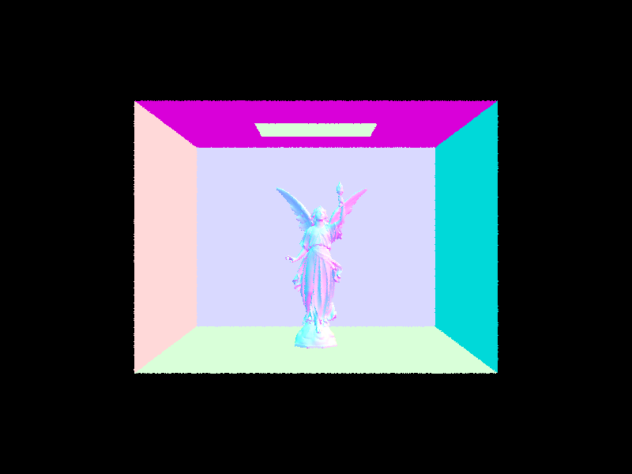
|
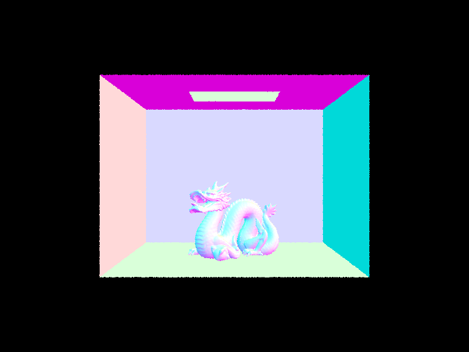
|
|
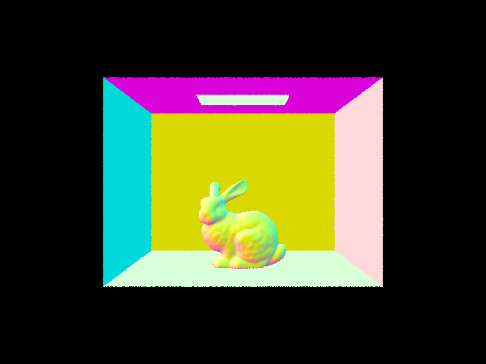
|
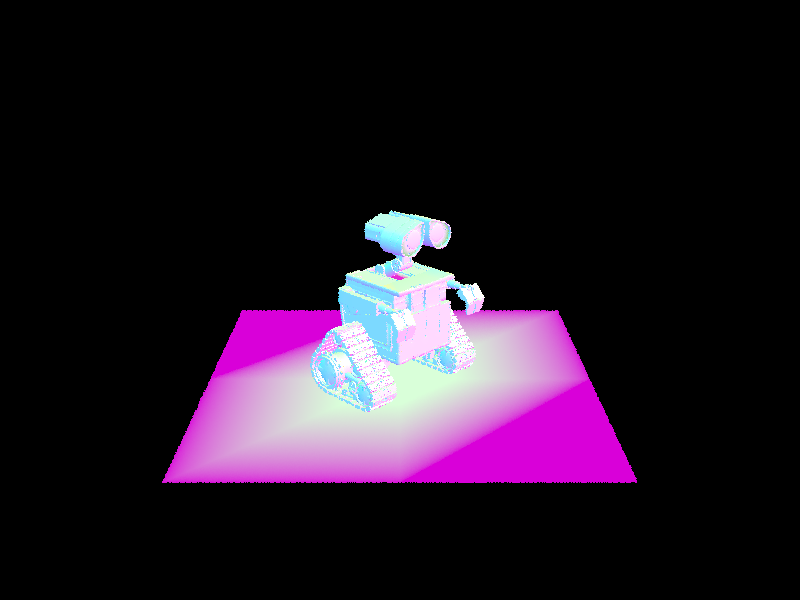
|
Compared the render time on three different scenes: beetle, cow, teapot.
beetle: 0.1311s with BVH, 51.7661s without BVH
cow: 0.1587s with BVH, 44.1529s without BVH
teapot: 0.1324s with BVH, 16.7828s without BVH
With BVH acceleration, I recorded speedup of 395x, 278x, and 127x respectively. Clearly, BVH acceleration has a huge impact on rendering performance of complicated meshes. This is because it optimizes the runtime from O(n) to O(logn). The previous linear runtime is because for a given ray, it needs to do hit test with all objects. The latter logarithmic runtime is because for a given ray, we do hit test by traversing the BVHNode tree. However, depending on the split heuristic and the scene itself, we can see from the experiment result that the speedup isn't consistent - some has huge speedup than others. This is probably because in some mesh, we can split the objects to make a balanced tree, while some others couldn't achieve that.
Part 3: Direct Illumination
In this part, I implemented two methods for direct lighting.
The first one is the simple uniform hemisphere sampling method. Given a hit point, I sample a solid angle uniformly at random in the hemisphere and record the radiance from that angle. The radiance is defined as the light emitted from the first object the ray intersects. Following the Monte Carlo estimator, the one bounce radiance for a specific sample will be
bsdf(p, wi->wo) * L(p, wi) * cos(wi) * 2pi / N
The second one is importance sampling lights. Different from the previous method, this method only sample rays towards lights. In case there're multiple lights, this method samples N samples for each lights. Given a ray from hit point to a light point, if there's no objects in between, we can be sure that the hit point will get the radiance from the light for that ray. Following the Monte Carlo estimator, the one bounce radiance for a specific sample for a specific light will be
bsdf(p, wi->wo) * L(p, wi) * cos(wi) / pdf / N
We then add up the estimated radiance from all lights to get the final result
|
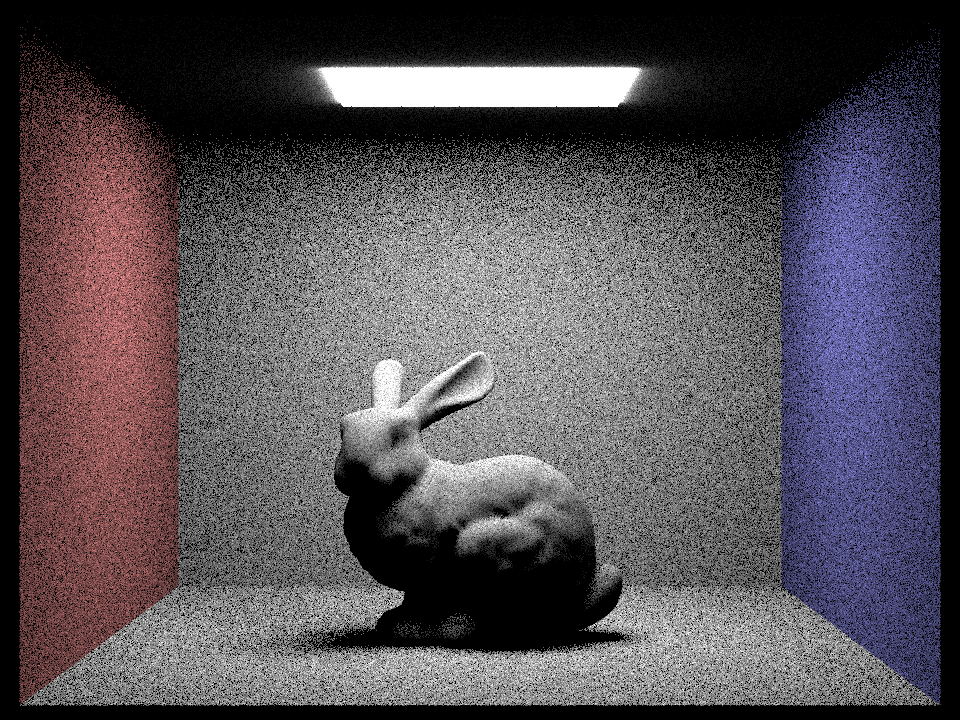
|
|
|
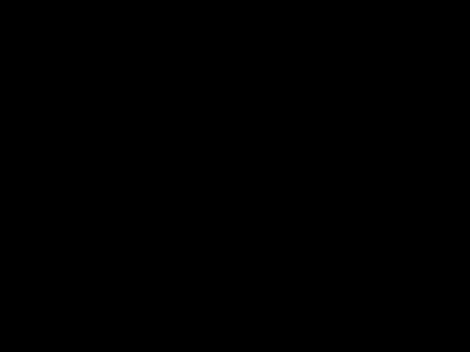
|
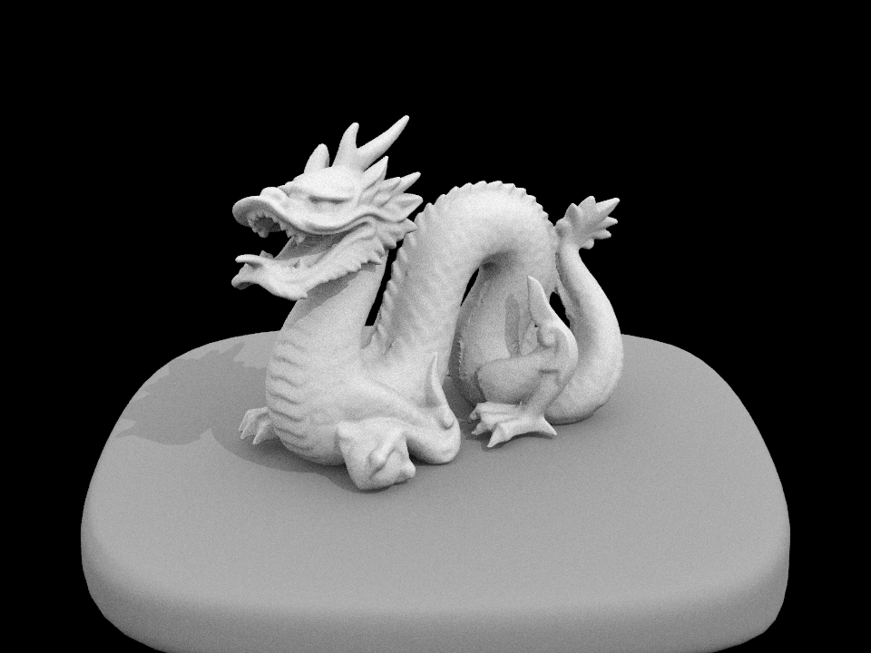
|
|
|
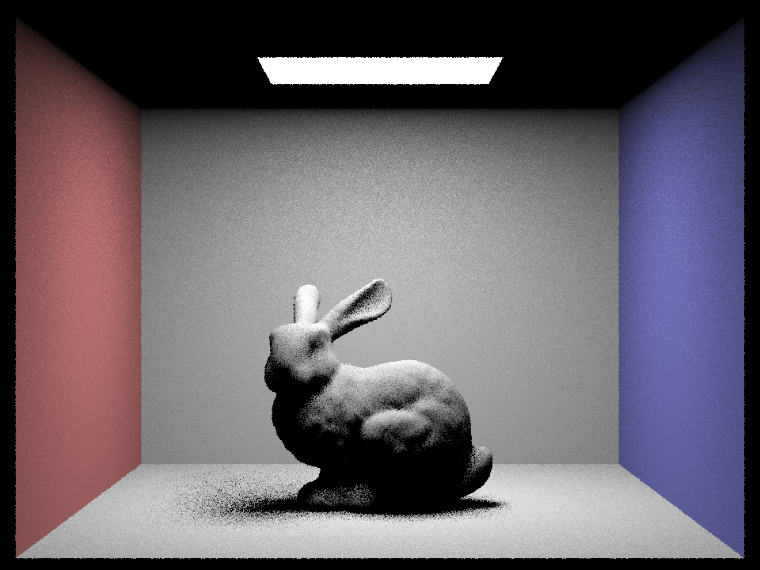
|
|
|
|
We can see that the noise levels decreases as we increase the light sample count. This is because the variance of the estimator is large when sample size is small. As we go from 1 sample per light to 64 samples per light, the estimation's variance decreases so there's less noise.
The difference between uniform sampling and importance sampling is quite obvious. Since uniform sampling samples rays uniformly at random over the hemisphere, only a fraction of the rays will be valid rays coming from lights, and all the other samples are useless. On the other hand, importance sampling samples rays towards the light, so if the ray is not cut off by some other object in between, these samples are all going to be valid rays. This means uniform sampling is sort of like importance sampling with fewer samples. Therefore, we can observe more noise from the uniform sampling image for the bunny. Another important difference is that with point light source, uniform sampling will almost never sample any valid lights, which explains why the dragon uniform sampling images is all black.
Part 4: Global Illumination
In this part, I implemented global illumination using Russian Roulette. Most of the logic lies within at_least_one_bounce_radiance(...). I first importance sample on the light (direct illumination / one bounce) and importance sample on the bsdf of the hit point. I decide whether I want to follow this new ray following these conditions.
- If the new ray hasn't reached the maximum ray depth, which means we could do more bounces.
- If there's an intersection with an object.
- If Russian Roulette with termination probability of 0.35 says we can continue.
Following the equation of path tracing with Russian Roulette, I have the following code for recursive calls.
L_out(p, wo) = L_1bounce(p, wo) + bsdf(p, wi->wo) * L_out(p', wi) * cos(wi) / pdf / cpdf
|
|
|
|
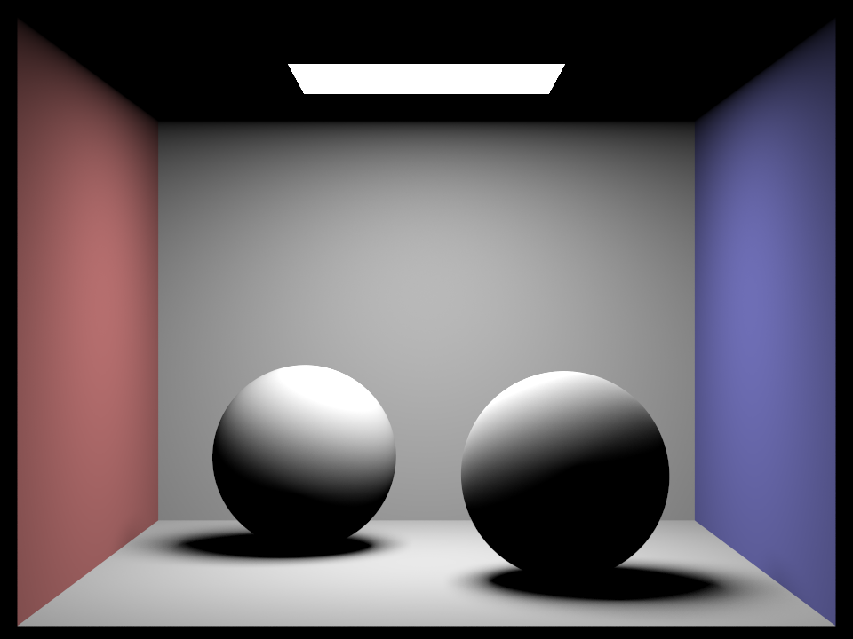
|
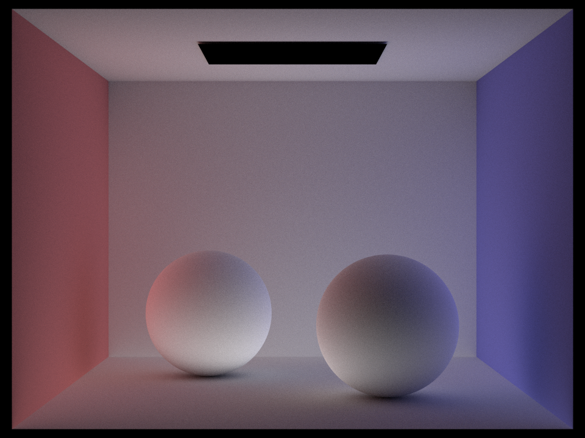
|
For the direct illumination image:
- the ceiling and the bottom of the spheres are black because there's no ray that can go from the ceiling to the light directly.
- The color of the sphere, the floor and the background is black and white because we only consider lights with one bounce and the albeto for these objects make them not absorb any particular colors. Therefore, the color on the side-walls cannot reflect to the spheres etc.
For the indirect illumination image:
- the ceiling and the bottom of the spheres are illuminated because with more bounce, a ray can find its way to the light.
- the color of the sphere, the floor and the background has red and blue because we consider more bounces of the ray. Therefore, the colors on the side-walls can reflect the spheres etc.
- the light is black probably because it's not a diffuse material and we haven't implement the specific bsdf yet. (also because I commented out the zero_bounce method)
|
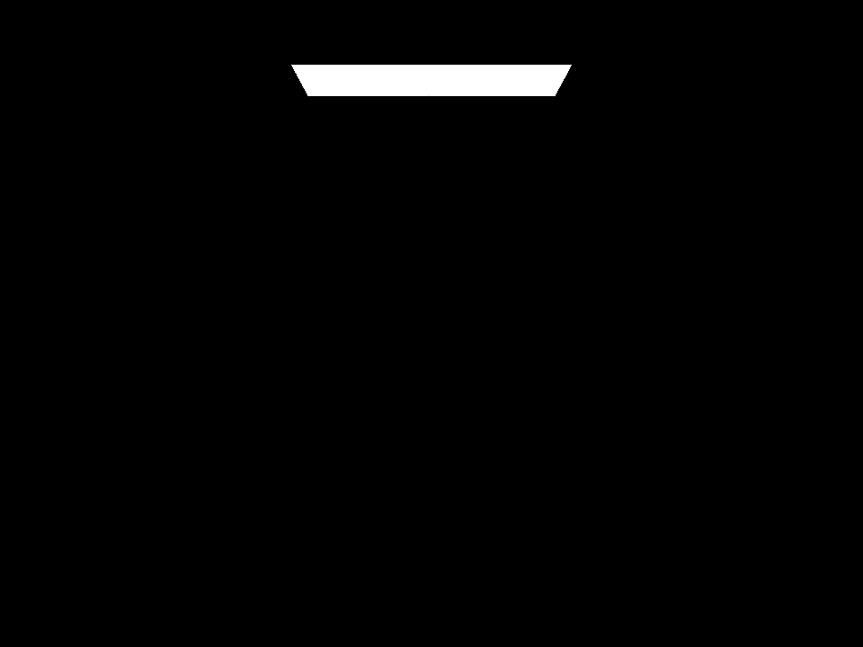
|
|
|
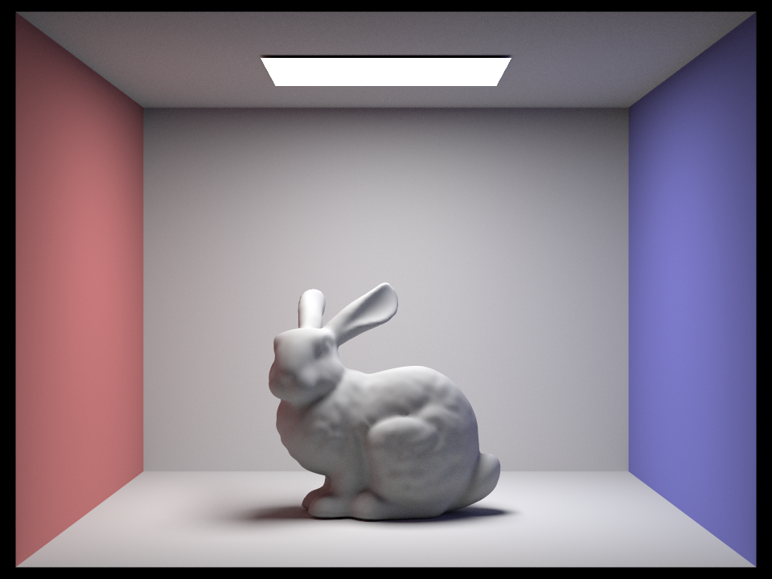
|
|
|
|
When m=0, only zero bounce light is observed. When m=1, only direct illumination is observed. The difference between the last 3 images isn't drastic. This is because of the continuation probability of 0.65, which gives an expection of 1.5 bounces. This means most rays are expected to terminate at 1 to 3 bounces. Therefore, setting the max bounce high has almost no effects.
|
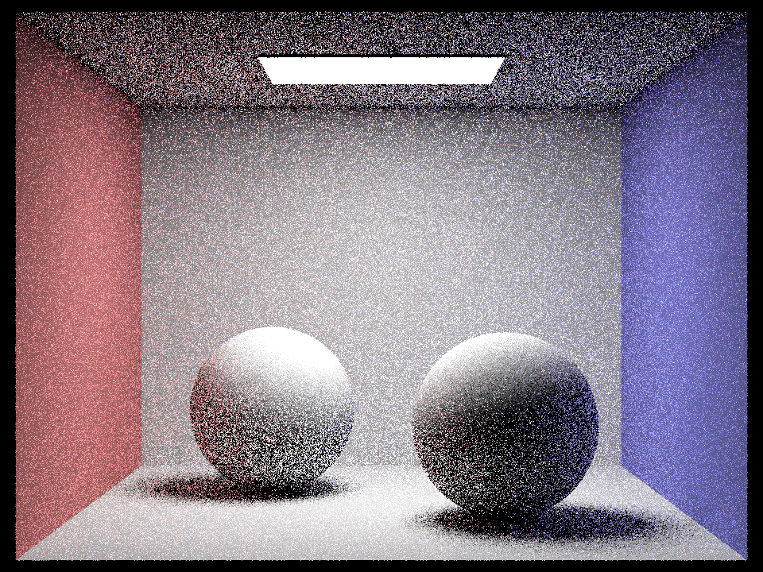
|

|
|
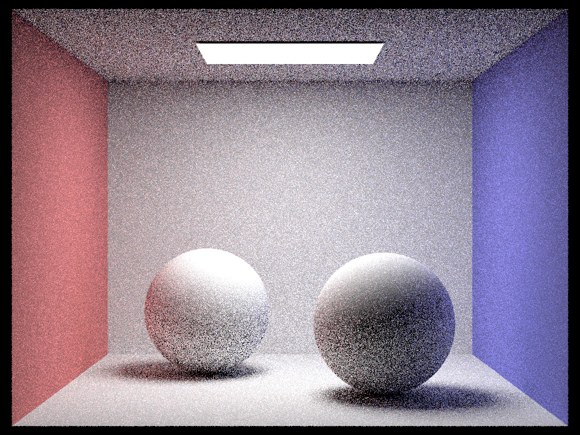
|
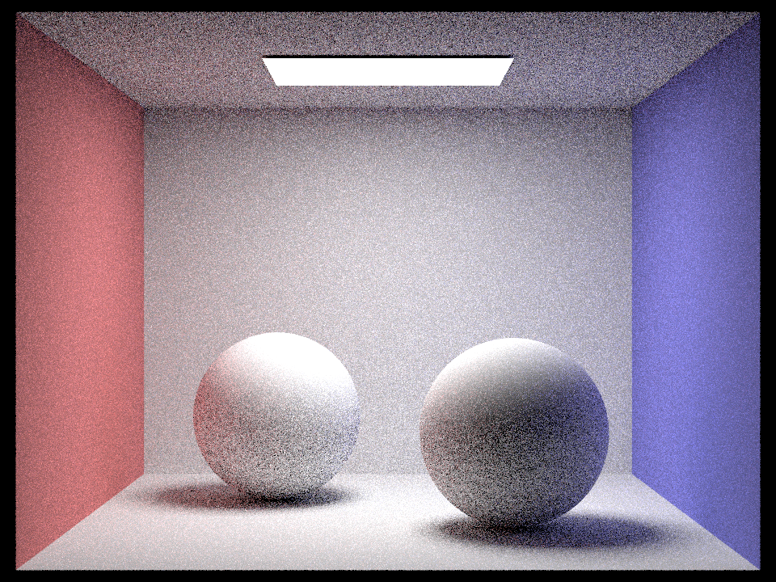
|
|
|
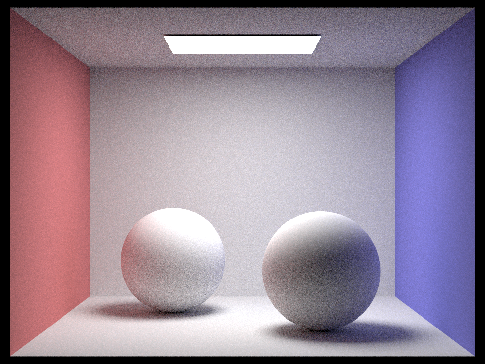
|
|
|
We can observe that the noise level decreases with more samples. This could also be explained by the fact that sample variance is inversely proportional to sample size. When we use 1024 samples per pixel, we get a no-noise render.
Part 5: Adaptive Sampling
In this part, I implemented adaptive sampling which terminates sampling for pixels that converges fast. For every batch of samples we sample for a given pixel, we keep track of the mean and variance, and check if the 95% CI is narrow enough. If true, then we early terminate the sampling for that pixel. Otherwise, we keep sampling until maximum sample number is reached. This helps accelerate the sampling process because we don't need to sample a ton of samples for all pixel.
|
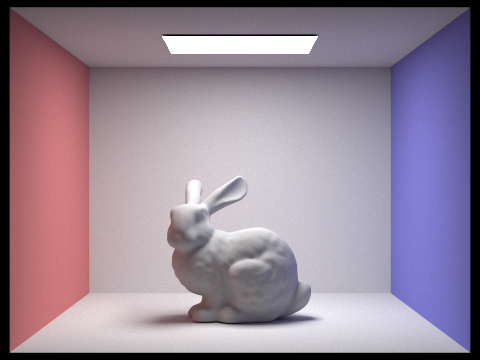
|
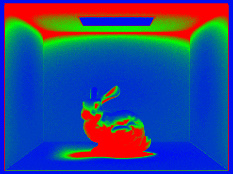
|